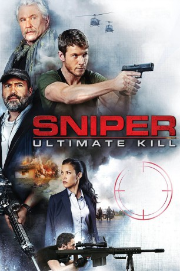

#7379 Sniper: Homeland Security
 
 IMDB-Wertung: 5.6 / 10
IMDB-Wertung: 5.6 / 10  Metascore: 0
Metascore: 0 
Zum ersten Mal vereinigen Brandon Beckett, Richard Miller und Sgt. Thomas Beckett ihre Kräfte in Kolumbien, um ein brutales Drogenkartell auszuheben. Als sich ein tödlicher Scharfschütze mit hochentwickelten, noch nie zuvor gesehenen Waffen die lokale Sonderermittlerin Kate Estrada zum Ziel setzt, muss sich unser Elite-Team in diesem explosiven, bahnbrechenden Actionthriller in einem ultimativen Kampf behaupten.
Jahr: 2017
Dauer: 93 Minuten
FSK: 16
Land: USA Studio: Destination FilmsTonspuren: DTS - ,
Untertitel:
Auflösung: 1080p (1920x800) Größe: 7720 MB
Genre: Action, Thriller, Drama
Regisseur: Claudio Fäh
Drehbuch: Michael Frost Beckner
Soundtrack:
Darsteller:
 Tom Berenger als Thomas Beckett
Tom Berenger als Thomas Beckett- Juan Sebastián Calero als
- Chad Michael Collins als Brandon Beckett
- Juan Pablo Gamboa als
- Danay Garcia als Kate Estrada
- Joe Lando als John Samson
 Billy Zane als Richard Miller
Billy Zane als Richard Miller- Felipe Calero als
- Lucho Velasco als
Datei: X:\2017(N-Z)\Sniper Homeland Security (2017, FSK16, 1920x800).mkv seit 06.11.2017
Festplatte: HD 2017(A-Z)-2018(A-F)
 Es gibt insgesamt 170 Filme in der Gruppe '2017(N-Z)'
Es gibt insgesamt 170 Filme in der Gruppe '2017(N-Z)'